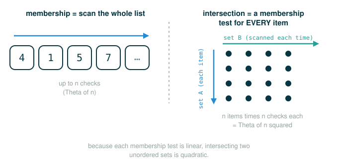

2.9 Built-In Sets and Unordered Set Representations
By the end of this lesson you will be able to do four things. First, use Python's built-in set type: create one, test membership, take unions and intersections, and add or remove elements. Second, state the abstract set interface that any set must support, no matter how it is built underneath. Third, build a working set yourself out of the linked lists you already know, using an unordered representation. Fourth, reason about how fast that representation is, so that later you can recognize when a different representation would be faster.
The big idea underneath all of this is data abstraction. A set is defined by what it can do, not by how it stores its elements. Once you separate those two things, you can swap in a faster storage scheme without changing any code that uses the set.
A Guest List Analogy
Picture a guest list for a party. Two facts about that list capture almost everything a set is.
First, names do not repeat. If "Ada" is already on the list and someone writes "Ada" again, you do not now have two Adas coming to the party. You still have one. A set holds each distinct element exactly once, and writing a duplicate changes nothing.
Second, the only question the list is really built to answer is membership:
Is Ada on the guest list?The list does not care about order. "Ada, then Grace" and "Grace, then Ada" are the same guest list. What matters is who is in and who is out. A set is the same: order is not part of its meaning, and the central operation is asking whether a value belongs.
Hold onto both facts. No duplicates, and membership is the point. Every representation you build in this lesson is just a different way to keep that promise.
Python's Built-In Set Type
In addition to the list, tuple, and dictionary, Python has a fourth built-in container type called a set. You write a set literal the way you write one in mathematics: elements separated by commas, enclosed in braces. Duplicate elements are removed as the set is built, and because a set is unordered, the order Python prints may differ from the order you wrote.
# (1)
s = {3, 2, 1, 4, 4}
Here is what happens when you ask Python to display it, exactly as in the original text:
>>> s = {3, 2, 1, 4, 4}
>>> s
{1, 2, 3, 4}Read the literal one token at a time. The final row is what the whole expression evaluates to.
{3, 2, 1, 4, 4}
├─ { ........... begins a set literal
├─ 3 ........... an element
├─ , ........... separates elements
├─ 2 ........... an element
├─ , ........... separates elements
├─ 1 ........... an element
├─ , ........... separates elements
├─ 4 ........... an element
├─ , ........... separates elements
├─ 4 ........... a duplicate element, discarded on construction
├─ } ........... ends the set literal
└─ evaluates to a set containing 1, 2, 3, 4The second 4 is dropped because the set already contains a 4. That is the no-duplicates rule from the guest list, enforced automatically.
Operations on a Built-In Set
Python sets support membership tests, length computation, and the standard set operations of union and intersection. Here is the original transcript:
>>> 3 in s
True
>>> len(s)
4
>>> s.union({1, 5})
{1, 2, 3, 4, 5}
>>> s.intersection({6, 5, 4, 3})
{3, 4}The membership test is the operation the whole lesson orbits around, so break it into tokens. The in operator asks a yes-or-no question and produces a boolean.
3 in s
├─ 3 ........... the value to look for
├─ in .......... the membership operator: is the left value an element of the right collection?
├─ s ........... the set being searched
└─ evaluates to TrueThe other lines each do one job. len(s) counts the distinct elements, so it is 4, not 5 — the discarded duplicate never existed as far as the set is concerned. s.union({1, 5}) returns a new set with every element that appears in either set. s.intersection({6, 5, 4, 3}) returns a new set with only the elements that appear in both, which are 3 and 4.
Beyond union and intersection, Python sets support several other methods. The predicates isdisjoint, issubset, and issuperset provide set comparison. Sets are mutable, and can be changed one element at a time using add, remove, discard, and pop. Additional methods provide multi-element mutations, such as clear and update.
Here is a short, runnable tour that creates a set, tests membership, combines, and then mutates it. Because the display order of a set is not part of its meaning, this example wraps results in sorted so the printed output is stable and you can check it by hand.
# (2)
s = {3, 2, 1, 4, 4}
print(sorted(s))
print(len(s))
print(2 in s)
print(5 in s)
print(sorted(s.union({1, 5})))
print(sorted(s.intersection({6, 5, 4, 3})))
s.add(5)
s.remove(2)
print(sorted(s))
Expected output:
[1, 2, 3, 4]
4
True
False
[1, 2, 3, 4, 5]
[3, 4]
[1, 3, 4, 5]Two membership tests anchor the rest: 2 in s is True because 2 is an element, and 5 in s is False because 5 is not. The last two lines mutate the set in place: add inserts 5, and remove deletes 2. After those, the distinct elements are 1, 3, 4, and 5.
The Abstract Set Interface
Now step back from Python's built-in type and ask the question the original text asks: what is a set, stated only in terms of behavior?
Abstractly, a set is a collection of distinct objects that supports membership testing, union, intersection, and adjunction. Adjoining an element and a set returns a new set that contains all of the original set's elements along with the new element, if it is distinct. Union and intersection return the set of elements that appear in either or both sets, respectively. As with any data abstraction, we are free to implement any functions over any representation of sets that provides this collection of behaviors.
It helps to write the interface as a contract, naming each operation and what it promises:
contains: is a given value an element of the set?
adjoin: return a set with one value added, if it is not already present
union: return a set with the elements that appear in either set
intersect: return a set with the elements that appear in both setsThis is the whole point of the lesson. The contract above never mentions linked lists, sorting, or trees. The representation underneath can change completely, and as long as these four behaviors hold, every piece of code that uses the set keeps working. In the remainder of this lesson we build one such representation. Sibling lessons build faster ones; the interface they satisfy is the same.
We will use the Link class from earlier in this chapter, which gives us simple and elegant recursive solutions for these elementary set operations.
Sets as Unordered Sequences
One way to represent a set is as a sequence in which no element appears more than once. The empty set is represented by the empty sequence. Membership testing walks recursively through the list.
We will use the linked list as that sequence. Here is the Link class, reproduced exactly, plus the string-conversion helper so that linked lists display readably. These come from earlier in this chapter; we include them here so the lesson is self-contained and runnable.
# (3)
class Link:
"""A linked list with a first element and the rest."""
empty = ()
def __init__(self, first, rest=empty):
assert rest is Link.empty or isinstance(rest, Link)
self.first = first
self.rest = rest
def link_expression(s):
"""Return a string that would evaluate to s."""
if s.rest is Link.empty:
rest = ''
else:
rest = ', ' + link_expression(s.rest)
return 'Link({0}{1})'.format(s.first, rest)
Link.__repr__ = link_expression
A set is now just a Link chain that happens to contain no repeats, and the empty set is Link.empty. To make the membership code read clearly, the original text first packages the empty-set test behind a name:
# (4)
def empty(s):
return s is Link.empty
That helper returns True exactly when s is the empty-set sentinel. Now membership testing walks the chain one link at a time. This is the official definition, verbatim:
# (5)
def set_contains(s, v):
"""Return True if and only if set s contains v."""
if empty(s):
return False
elif s.first == v:
return True
else:
return set_contains(s.rest, v)
Read a call to it one token at a time. The final row is what the call evaluates to.
set_contains(s, v)
├─ set_contains ... the membership function for unordered-sequence sets
├─ ( .............. begins the inputs
├─ s .............. the set, represented as a Link chain
├─ , .............. separates the inputs
├─ v .............. the value to look for
├─ ) .............. ends the inputs
└─ evaluates to True if v is somewhere in the chain, otherwise FalseThe function has three cases, and they line up with the three lines of the body. If the set is empty, the value cannot be in it, so return False. Otherwise, if the first element equals the value, you found it, so return True. Otherwise, the answer for the whole set is the answer for the rest of the set, so recurse on s.rest.
Here is a warm-up you can check by eye. Build a tiny set and ask about a value that is present and one that is not.
# (6)
warmup = Link(7, Link(8, Link(9)))
print(set_contains(warmup, 8))
print(set_contains(warmup, 3))
Expected output:
True
FalseNow the official transcript, verbatim. The set s holds 4, 1, and 5.
>>> s = Link(4, Link(1, Link(5)))
>>> set_contains(s, 2)
False
>>> set_contains(s, 5)
TrueThe first call returns False because 2 never appears as we walk 4, then 1, then 5, then the empty end. The second returns True because the walk reaches 5.
This implementation of set_contains requires time on average to test membership of an element, where is the size of the set s. We will return to why in a moment.
Adjoining an Element
Using this linear-time function for membership, we can adjoin an element to a set, also in linear time. Adjoining means adding a value, but only if it is not already there, so the no-duplicates promise is kept. Here is the official definition, verbatim:
# (7)
def adjoin_set(s, v):
"""Return a set containing all elements of s and element v."""
if set_contains(s, v):
return s
else:
return Link(v, s)
Read a call to it one token at a time:
adjoin_set(s, v)
├─ adjoin_set .... the function that adds a value to a set if it is absent
├─ ( ............. begins the inputs
├─ s ............. the existing set
├─ , ............. separates the inputs
├─ v ............. the value to add
├─ ) ............. ends the inputs
└─ evaluates to the same set if v is already present, otherwise a new Link with v in frontThe logic is a guard followed by an action. First ask whether the value is already a member. If it is, there is nothing to do, so return the set unchanged. If it is not, build a new chain with the value at the front. Putting it at the front is cheap and the order does not matter, because for a set order carries no meaning.
The official transcript continues. Starting from s = Link(4, Link(1, Link(5))), we adjoin 2:
>>> t = adjoin_set(s, 2)
>>> t
Link(2, Link(4, Link(1, Link(5))))Because 2 was not already present, the result is a new chain with 2 in front of the old elements.
Intersection of Unordered Sets
In designing a representation, one of the issues with which we should be concerned is efficiency. Intersecting two sets set1 and set2 also requires membership testing, but this time each element of set1 must be tested for membership in set2, leading to a quadratic order of growth in the number of steps, , for two sets of size .
The figure below shows how one linear membership test per element compounds into quadratic work across the whole intersection.

The intersection keeps exactly the elements of set1 that are also members of set2. That is a filter: keep an element when a test passes. The original text expresses it in a single line using a linked-list filtering helper called keep_if_link. Here is the official definition, verbatim:
# (8)
def intersect_set(set1, set2):
"""Return a set containing all elements common to set1 and set2."""
return keep_if_link(set1, lambda v: set_contains(set2, v))
Read the body one token at a time. The final row is what the call returns.
keep_if_link(set1, lambda v: set_contains(set2, v))
├─ keep_if_link ............... keep the elements of a linked list that pass a test
├─ ( .......................... begins the inputs
├─ set1 ....................... the list whose elements we filter
├─ , .......................... separates the inputs
├─ lambda v: .................. an anonymous test function of one element v
├─ set_contains(set2, v) ...... the test: is v a member of set2?
├─ ) .......................... ends the inputs
└─ evaluates to a set of the elements of set1 that are also in set2For this to run on its own, we need the helper keep_if_link, and for the official transcript we also need apply_to_all_link and a square function. These are linked-list versions of the familiar filter and map operations. We define them locally so this lesson runs without depending on an earlier one. Note the argument order: the linked list comes first and the function second, which is exactly how the set transcript calls them.
# (9)
def keep_if_link(s, f):
if s is Link.empty:
return s
else:
kept = keep_if_link(s.rest, f)
if f(s.first):
return Link(s.first, kept)
else:
return kept
def apply_to_all_link(s, f):
if s is Link.empty:
return s
else:
return Link(f(s.first), apply_to_all_link(s.rest, f))
def square(x):
return x * x
Here is a bridge example you can verify by hand before reading the official transcript. Intersect two small sets where the answer is obvious.
# (10)
a = Link(1, Link(2, Link(3)))
b = Link(2, Link(3, Link(4)))
print(intersect_set(a, b))
Expected output:
Link(2, Link(3))The elements 2 and 3 appear in both a and b; 1 and 4 do not, so they are dropped.
Now the official transcript, verbatim. Recall s = Link(4, Link(1, Link(5))) and t = Link(2, Link(4, Link(1, Link(5)))):
>>> intersect_set(t, apply_to_all_link(s, square))
Link(4, Link(1))This transcript line is worth slowing down on, because running the verbatim code does not produce Link(4, Link(1)) — it produces Link(1), and seeing exactly why is excellent practice. The second argument is apply_to_all_link(s, square), which squares every element of s. Since s holds 4, 1, and 5, the squared set holds 16, 1, and 25. The set t holds 2, 4, 1, and 5. The only value the two share is 1, so the true intersection is Link(1). The original text's printed Link(4, Link(1)) is an inconsistency in that transcript; trust your hand-trace and the running code over the printed line. This is the "check your assumptions" habit in action: when a printed result and a careful trace disagree, run the code.
Union of Unordered Sets
When computing the union of two sets, we must be careful not to include any element twice. The union_set function also requires a linear number of membership tests, creating a process that also includes steps.
The trick for avoiding duplicates is to keep only the elements of set1 that are not already in set2, then attach all of set2. That way each shared element is counted once, contributed by set2. Here is the official definition, verbatim:
# (11)
def union_set(set1, set2):
"""Return a set containing all elements either in set1 or set2."""
set1_not_set2 = keep_if_link(set1, lambda v: not set_contains(set2, v))
return extend_link(set1_not_set2, set2)
This definition uses extend_link to join two linked lists end to end. Here it is, reproduced exactly from earlier in this chapter:
# (12)
def extend_link(s, t):
if s is Link.empty:
return t
else:
return Link(s.first, extend_link(s.rest, t))
Here is a bridge you can verify by hand. Union the same two small sets from before.
# (13)
a = Link(1, Link(2, Link(3)))
b = Link(2, Link(3, Link(4)))
print(union_set(a, b))
Expected output:
Link(1, Link(2, Link(3, Link(4))))The elements 2 and 3 are in both, so keep_if_link removes them from a, leaving just 1. Attaching all of b then gives 1, 2, 3, 4 — each element once.
Now the official transcript, verbatim. Recall t = Link(2, Link(4, Link(1, Link(5)))) and s = Link(4, Link(1, Link(5))):
>>> union_set(t, s)
Link(2, Link(4, Link(1, Link(5))))The first argument is t, so keep_if_link(t, ...) keeps the elements of t that are not in s. Since t holds 2, 4, 1, 5 and s holds 4, 1, 5, the only element of t not in s is 2. Then extend_link attaches all of s, giving 2, 4, 1, 5. The result is exactly t, because t already contained every element of s plus the extra 2.
Tracing Membership Step by Step
The clearest way to feel why this representation is slow is to watch set_contains walk a chain. Take s = Link(4, Link(1, Link(5))) and ask whether 5 is a member. Each line below is one recursive call, and the indentation shows the call getting deeper.
set_contains(Link(4, Link(1, Link(5))), 5) first is 4, not 5, recurse on the rest
set_contains(Link(1, Link(5)), 5) first is 1, not 5, recurse on the rest
set_contains(Link(5), 5) first is 5, match, return TrueIt took three calls because 5 is the third element. Now ask about a value that is absent, set_contains(s, 2):
set_contains(Link(4, Link(1, Link(5))), 2) first is 4, not 2, recurse on the rest
set_contains(Link(1, Link(5)), 2) first is 1, not 2, recurse on the rest
set_contains(Link(5), 2) first is 5, not 2, recurse on the rest
set_contains(Link.empty, 2) empty set, return FalseA miss walks the entire chain plus one final empty check. That is the worst case, and it is the case that decides the order of growth.
Efficiency of Unordered Sets
For an unordered linked-list set of size , a membership test may have to inspect every element before deciding. The work grows in proportion to :
Because adjoin_set does one membership test and then a constant amount of extra work, it is also linear in .
Intersection and union are where the cost compounds. Each element of one set is tested for membership in the other, and each of those tests is itself a linear walk. For two sets of size , that is tests of cost about each:
Make this concrete. Intersecting two sets of size 100 takes on the order of 100 times 100, which is about 10,000 steps. That number grows fast: double the sizes to 200 and the work roughly quadruples to about 40,000.
The lesson is not that sets are inherently slow. The interface from earlier promises nothing about speed. It is this particular representation — an unordered sequence — that makes membership linear, and linear membership is what makes intersection and union quadratic. A different representation can keep the same interface while making membership much faster, and that is exactly what the sibling lessons pursue.
As a side note for context: Python's own built-in set type does not use any of these sequence representations. It uses a hash-table-style scheme that makes membership very fast on average. The representations in this lesson are about learning to build and analyze a data abstraction yourself, not about reimplementing the built-in type.
⚠Common Beginner Traps
Trap: expecting set order to matter. A set is defined by membership, not by arrangement. {1, 2, 3} and {3, 2, 1} are the same set, and Python may print either order. If you need a stable order for output, sort it yourself with sorted.
Trap: forgetting the membership guard in adjoin_set. If adjoin_set always built Link(v, s) without first checking membership, the chain could end up holding the same value twice. It would no longer keep the no-duplicates promise and would stop being a valid set representation.
Trap: thinking union means gluing two lists together. Concatenation can repeat shared elements. Union must include each value exactly once, which is why union_set first removes the overlap with keep_if_link before attaching the second set with extend_link.
Trap: assuming the argument order of helpers is fixed. In some sections of the original text, the filter and map helpers take the function first, as in keep_if_link(f, s). In this lesson the set code calls them with the linked list first, as in keep_if_link(set1, lambda v: ...). When you reuse a helper, check which order it expects, or your call will fail or filter the wrong way.
Trap: blaming the abstract set for slow operations. The slowness here belongs to the unordered-sequence representation, not to the idea of a set. Swap the representation and the same interface can run far faster.
✓Check Your Understanding
- Why does the literal
{3, 2, 1, 4, 4}produce a set with only four elements? - Given
s = Link(4, Link(1, Link(5))), what doesadjoin_set(s, 1)return, and why? - Why does
adjoin_setcallset_containsbefore it builds anything? - In
union_set, why do we keep only the elements ofset1that are not inset2, instead of keeping all ofset1? - Why does intersection of two unordered linked-list sets of size take time, when a single membership test takes only ?
Show the answers
- A set stores each distinct element once. The second
4duplicates an element already present, so it is discarded as the set is constructed, leaving1,2,3,4. - It returns
Link(4, Link(1, Link(5))), the same set unchanged. Because1is already a member, the guardset_contains(s, v)isTrue, soadjoin_setreturnsswithout building a new link. - It checks membership first so that it does not add a value that is already present. Without that guard, the chain could hold duplicates and stop being a valid set.
- Every element of
set2will be included anyway when we attach all ofset2at the end. Keeping a shared element fromset1as well would include it twice, which violates the no-duplicates rule. Removing the overlap first guarantees each value appears once. - Intersection performs one membership test for each element of the first set, so about tests. Each test is itself a linear walk costing about steps. The total is about times , which is .
§Summary
A set is a collection of distinct objects defined by its behavior, not its storage: it supports membership testing, adjunction, union, and intersection. Python provides a built-in mutable set type with all of these plus comparison predicates and in-place mutation through methods like add and remove. Separately, you can build a set yourself by choosing a representation that satisfies the same interface. The unordered-sequence representation stores elements in a linked list with no repeats; membership walks the chain and so costs , which makes adjoin_set linear and makes both intersection and union for two sets of size . That cost is a property of this representation, not of sets in general, which is exactly why the next representations keep the interface and change only how the elements are stored.
▶Step-Through Checkpoint
This block is the unordered representation in miniature: build a chain, test a hit, test a miss, then adjoin. Reading the run as an environment diagram keeps membership and construction distinct: each set_contains call opens a frame whose s walks one link deeper down the chain on the heap, while adjoin_set adds nothing to that chain until the miss is confirmed and then builds a single new Link(2, s) whose rest points back at the links s already owns. First read the code block below, then write down three predictions:
- Do the frames that open inside the
adjoin_setcall redo the same walk theabsentline just finished, or skip it? - Is the deepest point of the whole run on the
absentline or the last line? - Does building
tcopy the chain, or reuse the linkssalready owns?
# (14)
class Link:
empty = ()
def __init__(self, first, rest=empty):
assert rest is Link.empty or isinstance(rest, Link)
self.first = first
self.rest = rest
def link_expression(s):
if s.rest is Link.empty:
rest = ''
else:
rest = ', ' + link_expression(s.rest)
return 'Link({0}{1})'.format(s.first, rest)
Link.__repr__ = link_expression
def empty(s):
return s is Link.empty
def set_contains(s, v):
"""Return True if and only if set s contains v."""
if empty(s):
return False
elif s.first == v:
return True
else:
return set_contains(s.rest, v)
def adjoin_set(s, v):
"""Return a set containing all elements of s and element v."""
if set_contains(s, v):
return s
else:
return Link(v, s)
s = Link(4, Link(1, Link(5)))
present = set_contains(s, 5)
absent = set_contains(s, 2)
t = adjoin_set(s, 2)
Step through the block and check each prediction as the frames appear. Nothing is remembered between lines, so adjoin_set repeats the whole miss: four set_contains frames open again, one per element plus the final empty check, now inside adjoin_set's own frame, which makes the last line the run's deepest. t is no copy: Link(2, s) builds one new link whose rest points at the chain s already owns; the work of adjoining is the membership walk.